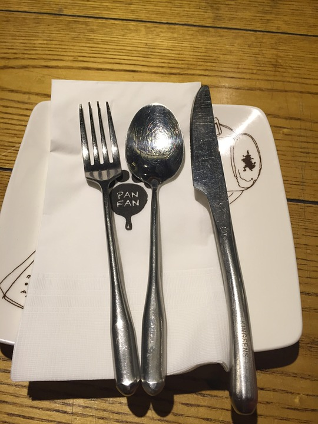

年輕人不應該在長輩或客人之前拿起筷子吃飯，也不應該在長輩或客人之前吃完飯。盛米飯和湯的碗是不應該拿起的。這種韓國民族特色的金屬碗，圓底帶蓋的「坐」在桌子上，底下沒有供你手握的把，加上米飯傳導給碗的熱與其重量，不碰是合情合理的。韓國人喜愛使用金屬作的長柄匙來吃飯與喝湯，一方面過往貴族都使用銀製餐具，另一方面是在韓國因為不使用即棄餐具，所到之處都使用這類方便易洗的不鏽鋼。韓式的筷子是扁平的金屬箸，只用來夾菜，通常不用來吃米飯，扁平是為防止滑落。
餐具的擺放也很重要。盛米飯的碗應該放在最左邊，然後是匙和筷子。熱的食物要放在桌子的右邊，涼的食物放在左邊。湯和燉煮的食物要放在每個人的右邊。蔬菜則應該和米飯一起放在左邊。泡菜要放在後面而醬應該放在前面。餐廳的裝飾也十分重要，客滿大多韓國人不會等候，因此通常飯館也比鄰而居。
韓國人到今日喝酒很講究禮儀，這與應酬文化有關。喝酒時要相互倒酒表示友誼和尊重。為別人斟酒，要用右手拿瓶，左手扶著右手，以示尊重。用左手斟酒被認為是不禮貌的。接受者也要雙手捧杯，以示謝意。另外韓國人喝酒不喜歡續酒，而喜歡一杯喝完再倒。
晚輩與長輩喝酒時，晚輩要先向長輩倒酒。在長輩先喝酒後，才能飲酒。飲酒時不能面對著長輩且要蓋住嘴。不同輩份的人面對面喝酒被認為是不禮貌的。 另外客人不應該拒絕主人敬的第一杯酒。在大多數的正規場合，客人回拒長輩或主人的敬酒要回拒兩次。如果對方第三次又敬酒，客人就應該接受。如果客人連續三次回拒，主人就不會再敬酒了。
 |
 |
|---|---|